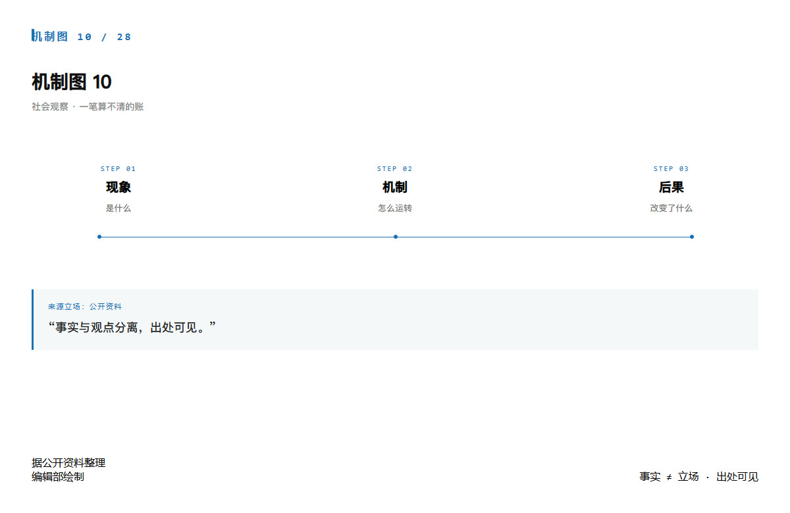

算完那笔账，他就不说话了
社会观察 · 一笔算不清的账
他打了一行字，看了两秒，又一个字一个字删掉。
这类场景没有现成统计。下面的判断来自公开的网络语料与平台机制描述：退出的人不留言、不转发，不留任何数据，只能靠留下的痕迹倒推。网友的原话照抄公共语料，具体事件与当事人一个字不转述。我们只按能看见的材料说话。
但这事和今天的你，有关系。你在评论区看到的「大家都在这么说」，未必是大家，很可能只是一群还没走的人。你以为的民意，可能只是没关页面的那部分人。
先看成本。在冲突性话题下公开发一段讲理的话，要准备承受三件事：被截图、被挂、被翻旧账。你说事实，对方说你态度；你补证据，对方说你还在狡辩。每一轮回应都要重新组织语言，而对面只需要一句短句就能再占一屏。
再看收益。几乎没有人在评论区被说服。你写完两千字，收获的是十几条反驳和几个「哈哈」。互动数据也难看，长文读起来费劲，转发率低于一句情绪化的断语。成本在涨，收益接近零，这笔账其实很好算。
当成本持续高于收益，行为会收敛到一个点：不公开表态，不在评论区讲理，只在私聊里说真话。这不是赌气，是算完账之后的退出。一个普通人没有义务给一场看不到回报的讨论持续供货，沉默在这里是一种均衡，不是软弱。
「抛开事实不谈，你就没有一点错吗？」这句网络流行语是个好标本。它的杀伤力不在骂人，在重置：你还在摆事实，对方已经把你放到被告席上解释语气。事实没被否定，只是被判成不重要。你一接话，就进了对方的赛道。
📌 一个值得记住的判断
退出的人不留下数据。一百条激烈评论，可能是一百个愤怒的人，也可能是一百个留下的人，加上一万个已经关掉页面的人。
沉默的可怕之处，是它不可见。平台读到的是还留在场上的人，算法按他们的互动继续加码；观察者读到的也是他们。那些算完账走掉的人，在语料里等于不存在。于是「舆论场」这个词，从这一步起就开始缩水。
一百条评论加一万次划走，最后呈现的还是一百条评论。再往后，连这一百条也会被当成「全民态度」。这不是谁在造假，是一次次无声退出叠加出来的错觉。被挤出场的叙事，不是被驳倒的，是没人再替它出场。
不出场不等于投降。他们带着没被听见的判断退到圈层内部、退到匿名区、退到戏谑和阴阳怪气里。你以为话题结束了，其实只是换了个房间继续。那个房间里的话更短、更狠，也更难被外面的人看见。
这里要补一句对称的话：这套退出机制不挑性别。任何在议题里算完账的人都会退，男性叙事只是其中一类。把它说成某一方独有的委屈，就把一个结构问题换成了站队问题。机制对谁都一样，区别只在谁先算清。
所以下次看到一个话题下面吵成一片，先别急着下结论说「大家都这么想」。问一句：那些不说话的人去哪了？他们没有变成同意，只是把手机扣在了桌上。你数得到的是声音，数不到的是沉默。
沉默阈值不是谁的品质问题，是收益表的问题。想让讲理的人回来，得先让讲理这件事有一点回报，哪怕只是被认真读完。在那之前，劝人「别沉默」和劝人「别生气」一样，都是站着说话。
网络流行语，出处不可考
"抛开事实不谈，你就没有一点错吗？"
它不攻击事实，只让事实变得不重要。事实还在，裁判已经换了。

▲ 沉默阈值：从出场到退场的临界点（编辑部绘制）
✍️ 上一个让你想说话又没说的话题是什么？
是哪一句让你把打好的字删掉的？评论区说说。觉得有用，点个赞、点个「在看」，转给也会刷到这类话题的人。
下一篇：那些「这还需要说吗」的句子，是什么时候开始不用证明的。
资料来源
网络流行语「抛开事实不谈，你就没有一点错吗」，出处不可考，据公共语料观察，作语言标本引用，不指向具体事件与群体。
「沉默阈值」「幸存者样本」为机制推论，非统计结论；退出规模无公开数据，据公共语料与平台互动机制观察归纳。
网络语料中「算了，不说了」类表述，据公共语料观察，作语言标本引用；具体事件与当事人不予转述。
社会观察，不站任何性别立场。事实据公开来源，未证实指控不转述、不评价。拆解规则是为了理解，不是行动指南。
出口：可谈的一步，是给事实核查型内容一个独立的分发池，让讲道理至少有一个不按互动数据计价的赛场。没有赛场，谈什么都是空话。